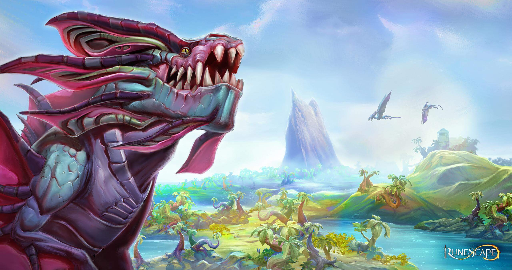
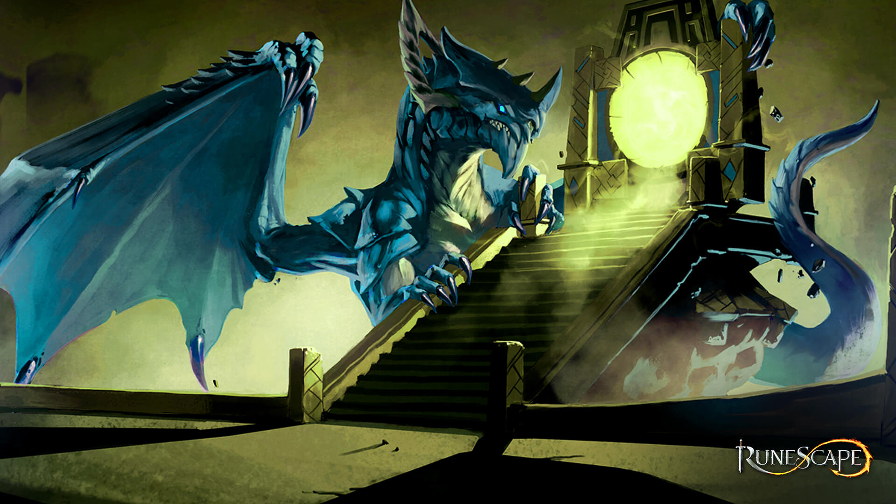
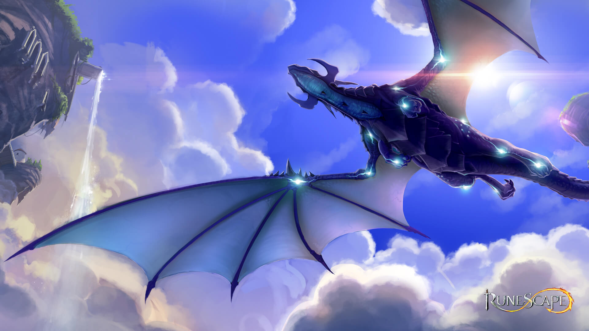
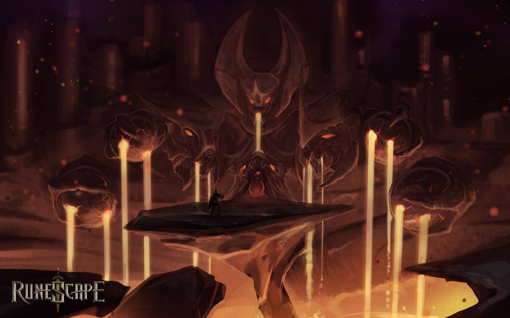
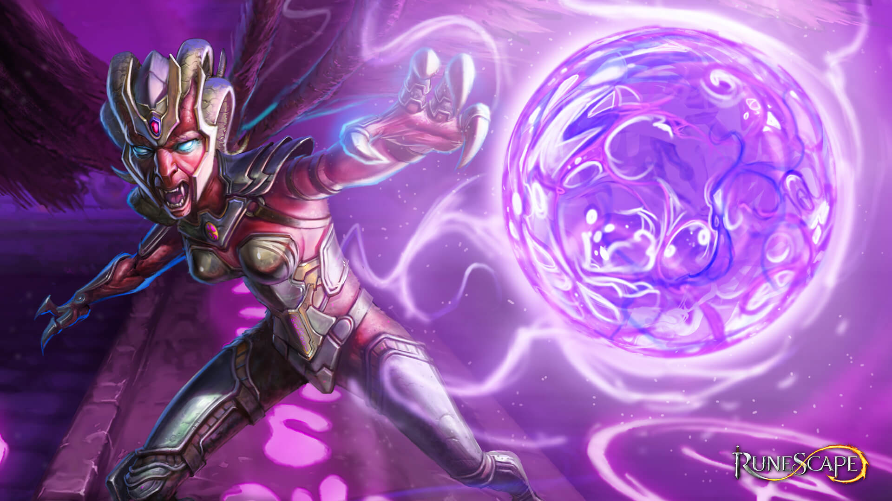
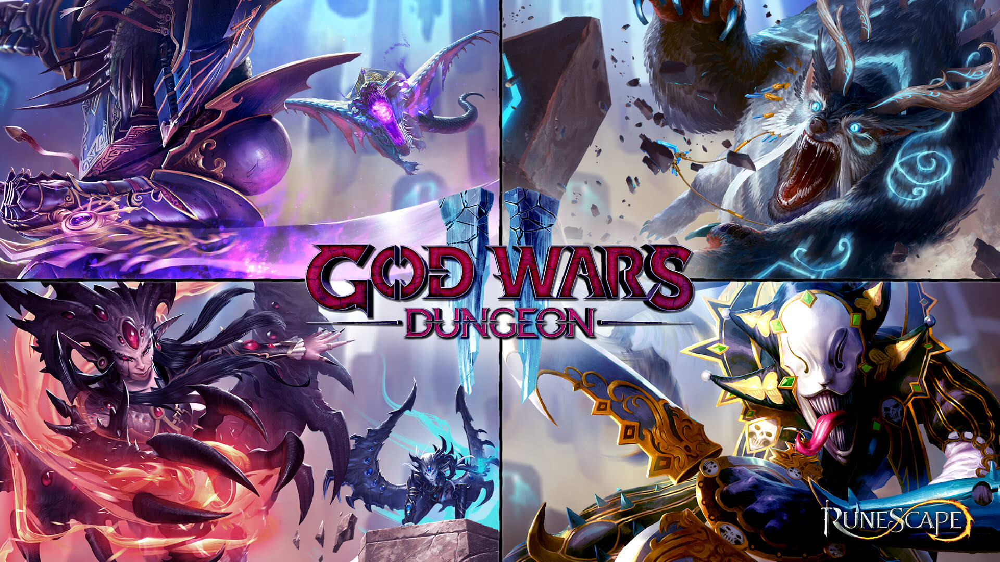

Missões para iniciantes: as primeiras aventuras de Gielinor
Escolha missões que dão XP e liberam áreas novas logo no começo. Veja quais valem a pena para quem acabou de sair do tutorial.
Categoria: Missões

Primeiros passos no RuneScape: por onde começar
Um roteiro simples para quem acabou de criar a conta: o que fazer primeiro, como se localizar em Gielinor e como evitar os erros mais comuns.
Categoria: Iniciantes

Seu primeiro chefe: como se preparar para a batalha
Antes de enfrentar um chefe, prepare equipamento, comida e estratégia. Este guia mostra o essencial para sair vivo da primeira luta.
Categoria: Chefes

Necromancy para iniciantes: conhecendo a skill
A Necromancy chegou ao jogo em 2023 e virou uma das skills mais comentadas. Entenda como ela funciona e dê os primeiros passos.
Categoria: Skills

Interface e controles: ajuste o jogo do seu jeito
Configure a interface, os atalhos e as opções do jogo para jogar com mais conforto desde o primeiro dia.
Categoria: Iniciantes

Quais skills treinar primeiro: um roteiro simples
Não sabe por onde começar a treinar? Veja um caminho simples para escolher as primeiras skills e ganhar XP sem se perder.
Categoria: Skills